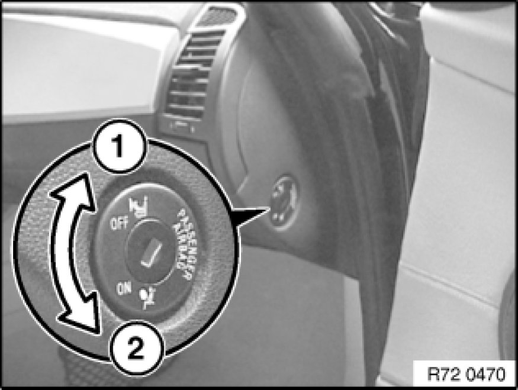

Deactivating Front Passenger Airbags with Key-Operated Switch
72 12 ... - Deactivating front passenger airbags with key-operated switch

Warning!
The responsibility for deactivation/activation rests with the customer.
Depending on the occupation of the front passenger seat, the front passenger and side airbags must be (de-)activated in accordance with the Owner's Handbook.

The passenger airbag can only be deactivated in accordance with the following instructions if the vehicle is equipped with a suitable key-operated switch!
The key-operated switch can be retrofitted if it is missing and has been ordered as an optional extra.
Key-operated switch:
- Optional extra SA 5DA for MINI
- Optional extra SA 470 for BMW

E83 up to 09/04 only:
see Deactivation of airbags RA 7212 - Deactivation of Airbags
E83 from 09/04 only:
Deactivation via key-operated switch, see following work steps
R50/R53 up to 04/04 only:
see Deactivation of airbags RA 7212 - Deactivation of Airbags
R50/R53 from 04/04 only:
Deactivation via key-operated switch, see following work steps
The following airbags are deactivated simultaneously with the key-operated switch (1):
- Passenger airbag
- Side airbag (passenger side)
- If necessary, knee airbag in US models (passenger side)
The airbags can only be deactivated/reactivated while the vehicle is stationary and with the door open.
Important!
The head airbag remains active.

Deactivation
1 - Turn key-operated switch with ignition key to "OFF" position.
Deactivatable airbags on passenger side out of operation.
Head airbag on passenger side remains active.
All airbags on driver side remain active.
Activation
2 - Turn key-operated switch with ignition key to "ON" position.
All the airbags in the vehicle are activated and are triggered in appropriate situations.
Warning lamp
When the ignition key is turned in the ignition lock, the function of the airbag system is checked and the warning lamp in the center console lights up for several seconds.
1 - The warning lamp is permanently lit when the passenger airbags are deactivated
2 - The warning lamp goes out after a few seconds when the passenger airbags are activated